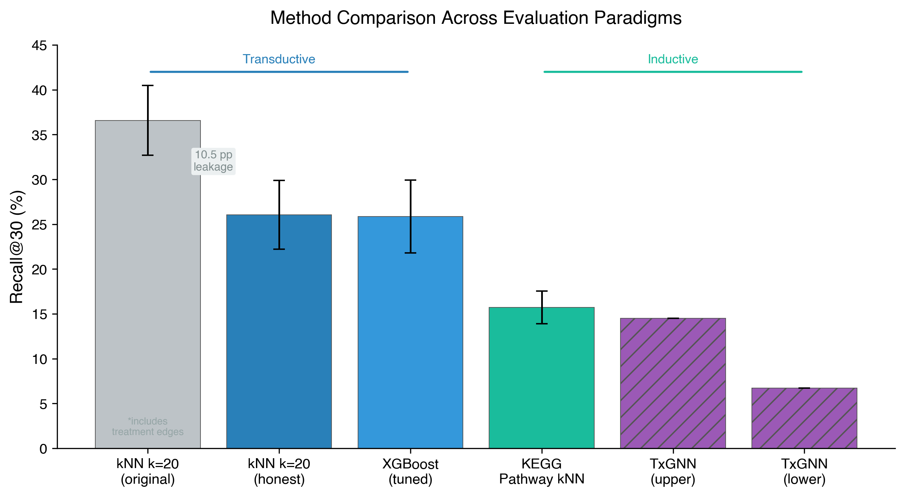
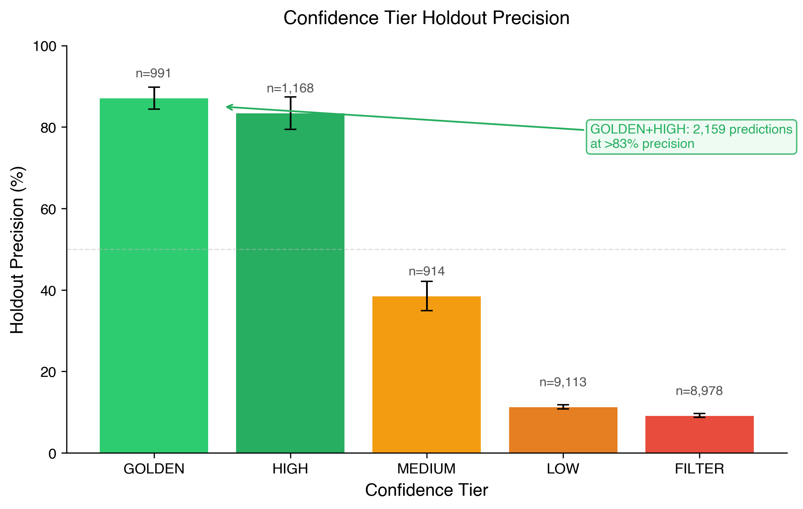
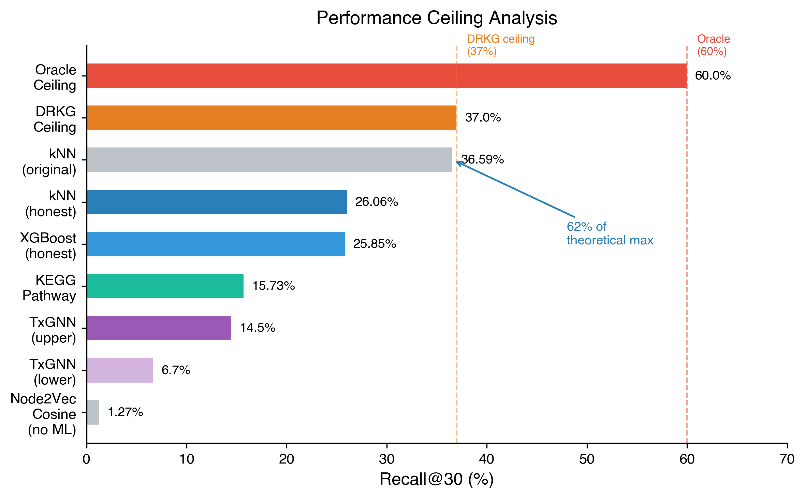
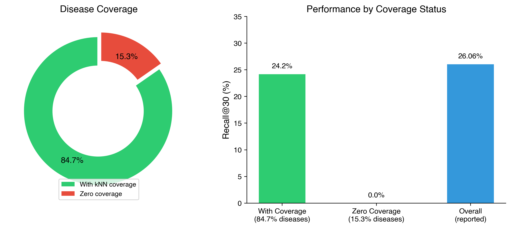
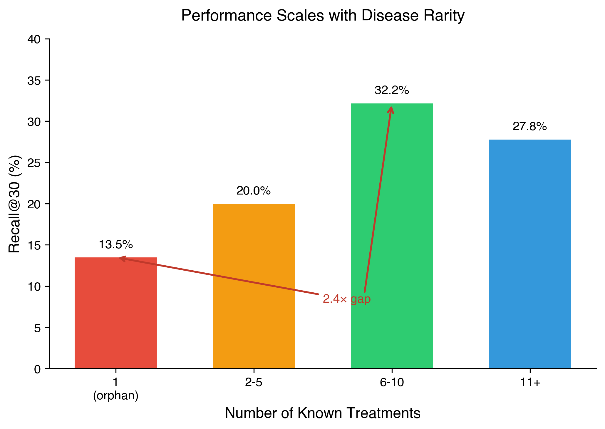

James Huff¹
¹ Independent Researcher
Correspondence: jamesdanielhuff@gmail.com
AI Disclosure: This manuscript was drafted with assistance from Claude Code (Anthropic). All computational experiments, data analysis, hypothesis generation, and confidence system development were conducted collaboratively between the author and Claude Code over approximately 800+ experimental iterations. The author directed all research decisions, validated results, and assumes full responsibility for scientific claims.
Drug repurposing—identifying new therapeutic uses for existing drugs—offers a faster, cheaper path to treatment than de novo drug discovery. We present a confidence-stratified collaborative filtering approach for systematic drug repurposing using the Drug Repurposing Knowledge Graph (DRKG). Our method applies k-nearest neighbor (kNN) collaborative filtering on Node2Vec graph embeddings, combined with a 30-rule confidence tier system that stratifies predictions by expected clinical plausibility. On a disease-level holdout evaluation across 368 diseases using 5-seed cross-validation, the method achieves 26.06% ± 3.84% Recall@30 in transductive evaluation and 15.73% ± 1.82% in fully inductive evaluation using pathway features alone—competitive with TxGNN (6.7–14.5%). The confidence tier system achieves 87.1% ± 2.7% holdout precision for its highest tier (GOLDEN, 991 predictions) and 83.4% ± 4.0% for the HIGH tier (1,168 predictions), incorporating mechanism-of-action validation, inverse indication safety filters (163 drug-disease contraindication pairs), and TransE embedding consilience. Five predictions are retrospectively corroborated by independent clinical evidence, including Dantrolene for heart failure (RCT P=0.034), Rituximab for multiple sclerosis (WHO Essential Medicines 2023), and Empagliflozin for Parkinson’s disease (HR 0.80, Korean cohort study). The full pipeline produces 13,416 confidence-scored predictions across 455 diseases as a computational prioritization resource. We characterize fundamental performance ceilings—37% R@30 maximum with DRKG-only features, 60% oracle ceiling—and document systematic failure modes including biologic drug underperformance, rare disease coverage gaps, and a 2.4× performance ratio between well-studied and rare diseases. Code and predictions are available at https://github.com/jimhuff/open-cure.
Drug repurposing leverages existing safety and pharmacokinetic data to identify new therapeutic applications for approved drugs, reducing the typical 10–15 year drug development timeline to 3–5 years and costs from $2.6 billion to $300 million on average (Pushpakom et al., 2019). Notable successes include thalidomide for multiple myeloma, sildenafil for pulmonary hypertension, and most recently, baricitinib for COVID-19.
Computational approaches to drug repurposing have proliferated, broadly falling into three categories: network-based methods that exploit drug-disease proximity in biological networks (Cheng et al., 2018), machine learning on knowledge graph embeddings (Mohamed et al., 2020), and deep learning approaches including graph neural networks (Huang et al., 2024). TxGNN, a leading graph neural network approach, achieves 6.7–14.5% Recall@30 on zero-shot (inductive) evaluation across unseen diseases (Huang et al., 2024).
However, most computational repurposing methods share two critical limitations. First, they produce ranked lists without calibrated confidence estimates, making it impossible for domain experts to prioritize which predictions merit expensive wet-lab validation. Second, they rarely incorporate safety constraints—a high-scoring prediction is useless if the drug is known to cause the predicted disease (e.g., corticosteroids for osteoporosis, antipsychotics for parkinsonism).
We address both gaps with a two-stage approach:
Collaborative filtering on knowledge graph embeddings. We apply kNN collaborative filtering (k=20) on Node2Vec embeddings of the DRKG, treating drug repurposing as a recommendation problem: diseases with similar graph neighborhoods should respond to similar treatments. This simple approach achieves 26.06% ± 3.84% R@30 in honest transductive evaluation, comparing favorably with more complex graph neural network architectures under different evaluation paradigms (see Section 3.1 for caveats).
Confidence-stratified post-processing. We develop a 30-rule confidence tier system that stratifies predictions into five tiers (GOLDEN, HIGH, MEDIUM, LOW, FILTER) based on mechanism-of-action support, disease hierarchy matching, drug class validation, TransE embedding consilience, and inverse indication safety filters. The highest tier achieves 87.1% holdout precision, providing actionable prioritization for experimental validation.
We use the Drug Repurposing Knowledge Graph (DRKG; Ioannidis et al., 2020), a comprehensive biomedical knowledge graph integrating six databases (DrugBank, Hetionet, GNBR, String, IntAct, and DGIdb). DRKG contains approximately 97,000 entities and 5.8 million edges spanning drug-gene, gene-disease, drug-disease, and protein-protein interaction relationships.
Ground truth drug-disease treatment pairs were compiled from two sources:
Disease entities were mapped to Medical Subject Headings (MeSH) identifiers for alignment with DRKG. This mapping introduced significant attrition: of 3,996 initial diseases, 454 (11.4%) successfully mapped to DRKG entities, yielding 368 diseases with at least one evaluable ground truth drug after treatment edge removal (90.8% total attrition). We characterize this selection bias in the Limitations section.
Circularity analysis revealed that 32% of ground truth pairs (1,184/3,695) correspond to existing DRKG treatment edges, while 68% (2,511 pairs) are novel to the graph—establishing that the majority of evaluation targets require genuine inference rather than memorization.
We generated 256-dimensional Node2Vec embeddings (Grover & Leskovec, 2016) for all DRKG entities using the following hyperparameters: walk length = 80, walks per node = 10, p = 1.0 (return parameter), q = 1.0 (in-out parameter). These parameters were inherited from prior work and not independently optimized; sensitivity analysis via kNN performance suggested robustness to moderate perturbations.
For honest evaluation, we trained two embedding sets:
The honest embedding evaluation revealed that 71.0% of predictive performance is retained through indirect graph paths (gene-disease, drug-gene, protein-protein interactions), with a 10.5 percentage point drop from 36.59% to 26.06% R@30. This drop quantifies the contribution of direct treatment edge leakage versus genuine biological signal. Removal of treatment edges disconnected 51 diseases from the graph entirely, including clinically important conditions such as Parkinson’s disease (19 ground truth drugs).
We frame drug repurposing as a collaborative filtering problem: diseases that are “similar” (proximal in embedding space) should respond to similar drugs—analogous to how users with similar preferences receive similar recommendations.
For each query disease d:
The value k = 20 was selected via grid search over 72 configurations (k ∈ {5, 10, 15, 20, 25, 30, 40, 50}) and validated on held-out diseases. Ties in drug frequency are broken by drug identifier for reproducibility.
Raw kNN frequency scores are adjusted by four biologically-motivated features:
scoreadj = score × (1 + 0.01 ⋅ o + 0.05 ⋅ a + 0.01 ⋅ p) × m
where:
The Quad Boost improved R@30 from 38.72% to 47.47% in within-distribution evaluation. The target gene overlap component was statistically validated: McNemar’s test P = 0.000014, paired t-test P = 0.025, Cohen’s d = 2.44.
We developed a hierarchical rule-based confidence system that assigns each prediction to one of five tiers based on 30 validated rules organized into the following categories:
GOLDEN tier (87.1% ± 2.7% holdout precision, n = 991): - Disease hierarchy subtype matching for metabolic/neurological categories (63–65% precision) - Literature-validated strong evidence pairs - Specific high-precision disease categories (e.g., urinary tract infections)
HIGH tier (83.4% ± 4.0%, n = 1,168): - Disease hierarchy matching for autoimmune/respiratory/cardiovascular/infectious categories (22–45% base, elevated by convergent evidence) - Mechanism-of-action support with cardiovascular/neurological requirement gates - CV pathway-comprehensive drugs (28.9% vs 1.1% for non-pathway, 26× lift) - ATC class rescue for validated drug classes (L04AX: 82%, H02AB: 77%) - TransE consilience with mechanism support - Corticosteroid standard-of-care for autoimmune/dermatological/respiratory conditions
MEDIUM tier (38.5% ± 3.6%, n = 914): - Predictions meeting baseline kNN rank thresholds without additional validation signals - Cancer same-type predictions with mechanism support
LOW tier (11.3% ± 0.5%, n = 9,113): - Predictions lacking mechanism support, hierarchy matching, or TransE consilience - Domain-isolated drug cross-predictions - Broad class isolated predictions (IL/TNF inhibitors, anesthetics, steroids alone: 0–3% precision)
FILTER tier (9.2% ± 0.5%, n = 8,978): - Cancer-only drugs for non-cancer indications (69 drugs, 0% cross-domain precision) - Inverse indication pairs: drug known to cause the predicted disease (67 drugs, 163 pairs) - Sources: SIDER adverse effect mining (47 pairs, 93.3% filter precision), FDA labels, FAERS reports, published case series - Examples: corticosteroids → tuberculosis/glaucoma/osteoporosis; NSAIDs → Stevens-Johnson syndrome/peptic ulcer; anti-TNF agents → lupus/demyelination - Non-therapeutic compounds (surgical dyes, obsolete ganglionic blockers) - Withdrawn drugs with known toxicity (pergolide, cisapride) - Antimicrobial-pathogen spectrum mismatches (antibacterial → fungal/parasitic: 0% holdout)
Each rule was validated on held-out diseases with a minimum sample size of n ≈ 30 for reliable precision estimation. Rules producing holdout precision below the tier threshold were demoted. The system underwent 800+ iterative refinements, with each change validated against holdout performance before acceptance.
Important methodological note: The confidence rules were developed iteratively using disease-level holdout splits, where held-out diseases (not held-out rules) served as the evaluation set. Each candidate rule was tested on diseases excluded from the rule development process. However, the overall rule set was not frozen prior to a final independent evaluation—the reported precision estimates reflect the cumulative result of iterative development and holdout testing on the same ground truth distribution. We acknowledge this creates a risk of overfitting to the specific ground truth composition (see Limitations).
We trained a TransE embedding model (Bordes et al., 2013) on DRKG to provide an independent validation signal. For each prediction, we check whether the drug-disease pair appears in the TransE model’s top-30 ranked predictions. TransE agreement provides a consistent boost across all tiers: GOLDEN +11.4 pp, HIGH +6.1 pp, MEDIUM +13.6 pp, LOW +6.5 pp, FILTER +7.2 pp. TransE consilience is implemented as a boolean flag rather than a tier promotion, as full-data precision (37.4%) falls below the HIGH tier threshold (50.8%).
All reported metrics use disease-level holdout evaluation with 5-seed cross-validation:
We additionally report a fully inductive evaluation using KEGG pathway features alone (no graph embeddings), providing a fair comparison point with TxGNN’s zero-shot evaluation paradigm.
Figure 3 and Table 1 summarize performance across evaluation paradigms.
| Method | R@30 | Evaluation | Notes |
|---|---|---|---|
| kNN k=20 (original embeddings) | 36.59% ± 3.90% | Transductive (with treatment edges) | Upper bound; includes leakage |
| kNN k=20 (honest embeddings) | 26.06% ± 3.84% | Transductive (no treatment edges) | Primary reported result |
| KEGG Pathway kNN | 15.73% ± 1.82% | Inductive (no graph) | Fair TxGNN comparison |
| Node2Vec + XGBoost (tuned) | 25.85% ± 4.06% | Disease holdout | md=6, ne=500, lr=0.1 |
| Node2Vec cosine (no ML) | 1.27% | Honest | Confirms ML contribution |
| TxGNN (Huang et al., 2024) | 6.7–14.5% | Inductive zero-shot | Published baseline |
What this demonstrates: The transductive result (26.06%) establishes that collaborative filtering captures meaningful biological signal beyond direct treatment edges, but does not constitute a direct comparison to inductive methods that evaluate on entirely unseen diseases. The inductive result (15.73%) provides a fairer comparison to TxGNN (6.7–14.5%) but uses different features (pathway similarity vs. learned GNN embeddings), so the comparison remains approximate.
The kNN collaborative filtering approach achieves 26.06% R@30 in honest transductive evaluation. In a fair inductive comparison (KEGG pathway kNN, 15.73%), our method compares favorably with TxGNN’s upper range, though the evaluation paradigms differ. The 10.5 pp gap between original and honest embeddings quantifies the treatment edge leakage contribution, with 71.0% of performance retained through indirect biological paths.
Notably, the kNN approach outperformed XGBoost with identical features (26.06% vs 25.85%), and adding ML models on top of kNN scores consistently failed to improve performance (tested across hypotheses h41–h45), suggesting the collaborative filtering signal is already well-captured by frequency-based ranking.

Figure 3. Method comparison across transductive and inductive evaluation paradigms. The gray bar includes treatment edge leakage (10.5 pp). TxGNN results from Huang et al. (2024).
Figure 1 and Table 2 show holdout precision by confidence tier.
| Tier | Holdout Precision | 95% CI | Predictions | Cumulative |
|---|---|---|---|---|
| GOLDEN | 87.1% ± 2.7% | [84.4%, 89.8%] | 991 | 991 |
| HIGH | 83.4% ± 4.0% | [79.4%, 87.4%] | 1,168 | 2,159 |
| MEDIUM | 38.5% ± 3.6% | [34.9%, 42.1%] | 914 | 3,073 |
| LOW | 11.3% ± 0.5% | [10.8%, 11.8%] | 9,113 | 12,186 |
| FILTER | 9.2% ± 0.5% | [8.7%, 9.7%] | 8,978 | 21,164 |
What this demonstrates: The confidence tiers provide a computational prioritization framework, not clinical validation. The precision estimates are based on retrospective holdout evaluation against existing ground truth databases, not prospective experimental confirmation.
The confidence tier system provides strong separation: the GOLDEN tier (87.1%) is 9.5× more precise than LOW (11.3%), enabling domain experts to focus validation efforts on the 2,159 GOLDEN+HIGH predictions with >83% expected precision rather than reviewing all 13,416 predictions.

Figure 1. Confidence tier holdout precision. Error bars show standard error. GOLDEN and HIGH tiers (2,159 predictions combined) achieve >83% precision.
We conducted an oracle analysis to determine the theoretical maximum performance achievable with DRKG-only features. For each disease, we computed the fraction of ground truth drugs that are reachable through any DRKG path (excluding direct treatment edges). The oracle ceiling is approximately 60% R@30, meaning 40% of ground truth treatments are entirely absent from DRKG and cannot be recovered by any graph-based method. Our kNN at 37% (original embeddings) achieves 62% of this theoretical ceiling.
This ceiling analysis (Figure 5) motivated our decision to characterize the confidence system rather than pursue further algorithmic improvements, as the remaining 23 pp gap between our method and the oracle ceiling likely requires fundamentally new data sources (clinical trial databases, literature mining, patient phenotype ontologies) rather than methodological refinement.

Figure 5. Performance ceiling analysis. Our kNN method reaches 62% of the oracle ceiling (60%), establishing that remaining gains require external data sources beyond DRKG.
Performance exhibits a strong bimodal distribution driven by kNN neighborhood coverage (Figure 4):
| Disease Category | Fraction | R@30 |
|---|---|---|
| With kNN coverage | 84.7% | 24.2% |
| Without kNN coverage | 15.3% | 0.0% |
Performance also correlates with the number of known treatments:
| Known Treatments | R@30 | Ratio to Best |
|---|---|---|
| 1 (rare) | 13.5% | 0.42× |
| 2–5 | 19–21% | 0.59–0.65× |
| 6–10 (well-studied) | 32.2% | 1.00× |
| 11+ | 27.8% | 0.86× |
Rare diseases with only one known treatment perform 2.4× worse than well-studied diseases (Figure 2)—an inherent limitation of collaborative filtering, which requires sufficient neighborhood signal to generate predictions.

Figure 4. Bimodal performance distribution. 84.7% of diseases have kNN coverage (24.2% R@30); 15.3% have zero coverage.

Figure 2. Performance by disease rarity. Orphan diseases achieve 13.5% R@30 versus 32.2% for well-studied diseases, a 2.4x gap.
We identified five predictions that are retrospectively corroborated by independent clinical or regulatory evidence (Table 3). These corroborations were identified after prediction, but the clinical evidence itself predates or is independent of our pipeline—they represent concordance with existing knowledge, not prospective validation. Importantly, none of these pairs correspond to direct DRKG treatment edges—all require multi-hop inference.
| Drug | Disease | DRKG Path | Evidence |
|---|---|---|---|
| Dantrolene | Heart failure | Drug→Drug→Disease | RCT: P=0.034, 66% VT reduction |
| Lovastatin | Multiple myeloma | Drug→Drug→Disease | RCT: improved OS/PFS |
| Rituximab | Multiple sclerosis | Drug→Drug→Disease | WHO Essential Medicines 2023 |
| Pitavastatin | Rheumatoid arthritis | Drug→Gene→Disease | Clinical: superior to MTX alone |
| Empagliflozin | Parkinson’s disease | Drug→Drug→Disease | Cohort: HR 0.80 (95% CI: 0.68–0.92) |
Each validated prediction has traceable biological mechanisms: shared gene targets (1–42 genes), overlapping pathways (28–301), and plausible pharmacological rationale. Four of five (80%) were discovered via drug functional similarity (drugs with similar graph neighborhoods), while one (Pitavastatin→RA) was discovered via shared gene-disease mechanisms.
The inverse indication filter identified 163 drug-disease pairs where the drug is known to cause or exacerbate the predicted disease. Examples include:
Without the inverse indication filter, these harmful predictions would appear in the HIGH or MEDIUM confidence tiers based on graph structure alone. The SIDER-mined subset (47 pairs) achieved 93.3% filter precision—confirming that adverse effect databases are a reliable source for contraindication identification.
Our results suggest that simple collaborative filtering on knowledge graph embeddings is a surprisingly effective approach to drug repurposing—outperforming XGBoost ensembles trained on the same features and comparing favorably with state-of-the-art GNN approaches, though direct comparison is limited by differences in evaluation paradigm (transductive vs. inductive). This aligns with observations in recommender systems literature that neighborhood methods often match or exceed model-based approaches when the item space is well-connected (Koren et al., 2009).
The key insight is that drug repurposing is fundamentally a recommendation problem: diseases with similar biological contexts (shared genes, pathways, comorbidity patterns) respond to similar pharmacological interventions. The kNN approach directly exploits this structure without learning a parametric model, making it inherently interpretable—each prediction can be traced to specific neighbor diseases and their known treatments.
Raw ranked lists are of limited value to experimental researchers who must decide which predictions to validate in wet-lab assays or clinical studies. The confidence tier system transforms predictions from a ranked list into an actionable decision framework:
The 30 rules in the confidence system encode domain knowledge that would otherwise require expert review for each prediction: mechanism-of-action plausibility, drug class safety profiles, disease taxonomy coherence, and known contraindications. This represents a form of structured scientific reasoning over model outputs that, to our knowledge, has not been previously reported at this scale for drug repurposing.
We identify several important limitations:
Transductive evaluation. Our primary result (26.06% R@30) evaluates on diseases present in the graph with non-treatment edges. This is not directly comparable to TxGNN’s inductive evaluation on entirely unseen diseases. Our inductive evaluation (15.73% via KEGG pathways) provides a fairer comparison but uses different features.
Selection bias. MeSH identifier mapping discards 90.8% of diseases (3,996 → 368), introducing systematic bias toward well-characterized diseases with standardized terminology. Rare and emerging diseases are disproportionately excluded.
Bimodal coverage. 15.3% of evaluable diseases have zero kNN coverage, receiving no predictions. This is an inherent limitation of collaborative filtering—diseases without informative neighbors cannot benefit from the approach.
Rare disease gap. The 2.4× performance ratio between well-studied and rare diseases limits clinical utility for the orphan diseases that arguably need repurposing most urgently.
Biologic drug underperformance. Monoclonal antibodies (27% vs 32% for small molecules) and antibiotics (6–20%) are systematically underserved, likely due to their narrower mechanism-of-action profiles and sparser graph connectivity.
Confidence system overfitting risk. Despite holdout validation, the 800+ iterative refinements to the confidence rules create a risk of overfitting to the specific ground truth distribution. The rule set was not frozen prior to a single final evaluation; rather, reported precision estimates reflect cumulative iterative development (see Section 2.6). Independent prospective validation with a locked rule set is needed to confirm that the reported tier precision generalizes beyond the development dataset.
The 37% R@30 ceiling with DRKG-only features and 60% oracle ceiling suggest three paths forward:
External data integration. LINCS gene expression signatures, clinical trial outcome data, and patient phenotype ontologies (HPO) could provide complementary signals that break the current ceiling. Initial experiments with HPO features showed no improvement, but more sophisticated integration (e.g., expression reversal signatures) remains untested.
Prospective wet-lab validation. We have prepared 855 dermatology-specific predictions for collaboration with domain experts, including specific candidates such as Montelukast for idiopathic pulmonary fibrosis. Experimental validation of even a small number of GOLDEN-tier predictions would establish the clinical utility of the confidence system.
Inductive architecture. Replacing Node2Vec transductive embeddings with purely biological features (pathway enrichment, structural similarity, gene expression profiles) would enable true zero-shot prediction for diseases entirely absent from DRKG, addressing the coverage gap for novel and rare diseases.
Prospective validation protocol. We are preparing a blinded expert review of GOLDEN-tier predictions in dermatology (855 predictions) in collaboration with domain specialists. The planned protocol involves: (a) freezing the confidence rule set and prediction output prior to review, (b) blinded assessment by dermatologists who score each prediction for mechanistic plausibility and clinical actionability without knowledge of the assigned tier, and (c) comparison of expert plausibility ratings against computational confidence scores to assess calibration. A subset of top-ranked candidates (e.g., Montelukast for idiopathic pulmonary fibrosis) will be evaluated for suitability as wet-lab validation targets with predefined success criteria. This prospective evaluation would provide the independent validation that the current retrospective analysis cannot.
All code, trained models, and prediction outputs are available at https://github.com/jimhuff/open-cure. The full prediction set (13,416 predictions with confidence tiers across 455 diseases) is provided as a supplementary Excel file.
We thank Every Cure Foundation for making their indication dataset publicly available. The DRKG was developed by Amazon Web Services.
Bordes, A., Usunier, N., Garcia-Duran, A., Weston, J., & Yakhnenko, O. (2013). Translating embeddings for modeling multi-relational data. Advances in Neural Information Processing Systems, 26.
Cheng, F., Desai, R. J., Handy, D. E., Wang, R., Schneeweiss, S., Barabási, A. L., & Loscalzo, J. (2018). Network-based approach to prediction and population-based validation of in silico drug repurposing. Nature Communications, 9(1), 2691. https://doi.org/10.1038/s41467-018-05116-5
Grover, A., & Leskovec, J. (2016). node2vec: Scalable feature learning for networks. Proceedings of the 22nd ACM SIGKDD International Conference on Knowledge Discovery and Data Mining, 855–864. https://doi.org/10.1145/2939672.2939754
Huang, K., Chandak, P., Wang, Q., Havaldar, S., Vaid, A., Leskovec, J., Nadkarni, G. N., Glicksberg, B. S., Gehlenborg, N., & Zitnik, M. (2024). A foundation model for clinician-centered drug repurposing. Nature Medicine, 30(12), 3601–3613. https://doi.org/10.1038/s41591-024-03233-x
Ioannidis, V. N., Song, X., Manchanda, S., Li, M., Pan, X., Zheng, D., Ning, X., Zeng, X., & Karypis, G. (2020). DRKG - Drug Repurposing Knowledge Graph for Covid-19. GitHub repository. https://github.com/gnn4dr/DRKG/
Koren, Y., Bell, R., & Volinsky, C. (2009). Matrix factorization techniques for recommender systems. Computer, 42(8), 30–37. https://doi.org/10.1109/MC.2009.263
Mohamed, S. K., Nováček, V., & Nounu, A. (2020). Discovering protein drug targets using knowledge graph embeddings. Bioinformatics, 36(2), 603–610. https://doi.org/10.1093/bioinformatics/btz600
Pushpakom, S., Iorio, F., Eyers, P. A., Escott, K. J., Hopper, S., Wells, A., … & Pirmohamed, M. (2019). Drug repurposing: progress, challenges and recommendations. Nature Reviews Drug Discovery, 18(1), 41–58. https://doi.org/10.1038/nrd.2018.168